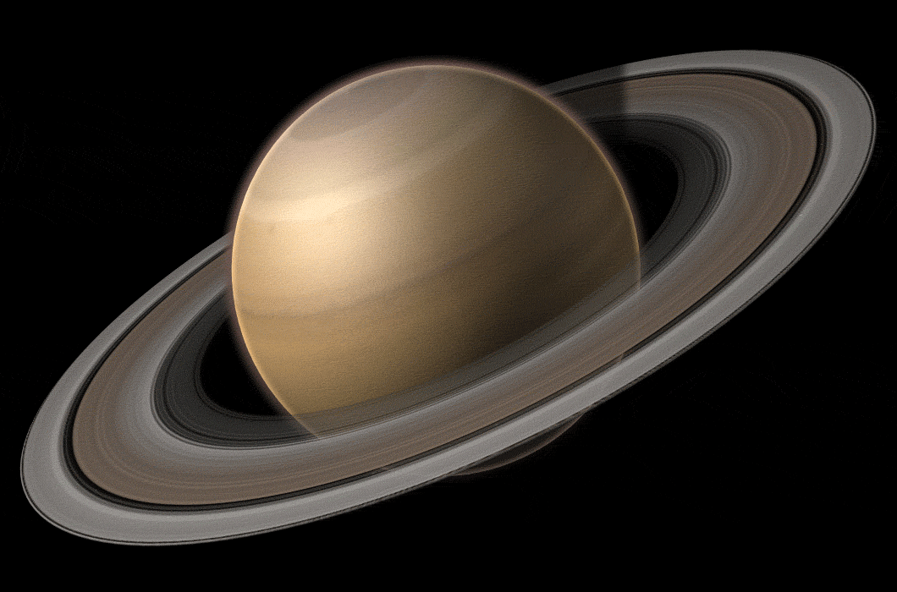

-Средняя плотность Сатурна составляет всего 0,687 грамма на кубический сантиметр, что делает его единственной планетой Солнечной системы, чья средняя плотность ниже плотности воды.
-За счет горячего ядра, температура которого достигает 11 700 градусов Цельсия, Сатурн излучает в космос в 2,5 раза больше энергии, чем получает от Солнца.
-Облака на северном полюсе Сатурна образуют гигантский шестиугольник, и каждая его сторона составляет приблизительно 13 800 километров.
-Некоторые спутники Сатурна, например Пан и Мимас, являются «пастухами колец»: их гравитация играет роль в удержании колец на их местах за счет резонанса с определенными участками кольцевой системы.
-Считается, что Сатурн поглотит свои кольца через 100 миллионов лет. Не надо :(